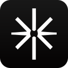

AXIS
Build at the speed of thought.
 Generative UI in the terminalTurn agent results into useful interactive surfaces.
Generative UI in the terminalTurn agent results into useful interactive surfaces. Bring your model subscriptionsUse Claude, Codex, OpenRouter, and local models in one workspace.
Bring your model subscriptionsUse Claude, Codex, OpenRouter, and local models in one workspace.Desktop
Bring Axis to the machine where your work happens.
3 platforms

macOS
Axis for Mac
Your desktop workspace for ambitious work with agents.

Linux
Axis for Linux
Bring your projects, agents, and momentum into one workspace.

Windows
Axis for Windows
Axis for Windows is on the way.
Install Axis with your agent
Copy these instructions into Claude Code, Codex, or any terminal-capable agent on your Mac.
Copy these instructions for your agent
Your agent will use the official Axis tap, install Homebrew only if needed, launch Axis, and verify the installation.
Install Axis for macOS using the official Homebrew tap. First confirm this Mac uses Apple silicon. If Homebrew is not installed, install it using the official instructions at https://brew.sh. Then run: brew tap Jedward23/axis && brew install --cask Jedward23/axis/axis. When installation finishes, open Axis and verify that the app launches successfully. Report the installed version and any error you encounter.Install from Terminal
Requires Homebrew and an Apple silicon Mac.
brew tap Jedward23/axis && brew install --cask Jedward23/axis/axisAlready installed? Run brew upgrade --cask Jedward23/axis/axis when a new version is published. View the official tap.
Mobile companion
Stay close to your workspace wherever you are.
2 platforms
iOS Simulator
Axis for iOS
Take your Axis workspace with you.

Android
Axis for Android
Your work, agents, and next move within reach.